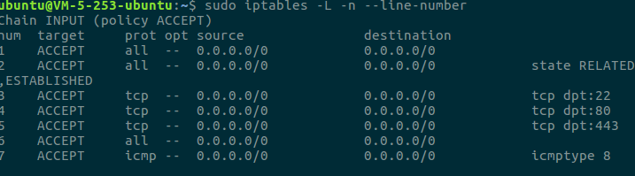
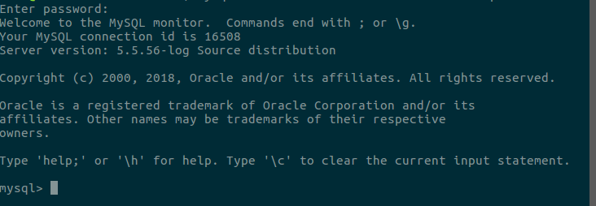

本地连接不上腾讯云服务器中mysql
前段时间一时兴起,租用了两年的腾讯云服务器，120一年也不是很亏。
给搭建了LNMP环境。
但在想要在本地连接服务器上的数据库的时候，却遇到了这样问题
ERROR 2003 (HY000): Can't connect to MySQL server on'xxx.xxx.xxx.85'(110)
一直连接不上。在经过一番摸索之后，发现服务器的3306端口被防火墙拒绝，这导致本地连接不上服务器的数据库，很是苦恼。最后设置端口3306的防火墙规则为‘Accept’后解决了这个问题。
解决方法如下：
首先登录腾讯云控制台，在自己服务器的安全组下添加安全规则，开放3306端口（进，出站都要设置）。
然后登录服务器,在终端输入
sudo iptables -L -n --line-number
找到3306端口所在的行号（在最左端），然后再输入sudo iptables -R INPUT x -j ACCEPT
（x改为你终端中3306端口所在行号）修改3306端口防火墙规则。最后结果如下
此时再在终端连接服务器数据库，就很顺利的连上啦！ 